UX Research: Online safety
Tech Fleet · 5-weeks · 1 week sprints · Google Sprints, Continuous Discovery & Lean UX
About
Agile UX methods offer a way for teams to explore/answer any question they may have about their product, users, or business in just 5 days without developing and releasing anything. It [...]
This is a case study that was conducted with Tech Fleet, a non-profit organization giving designers, researchers, and leaders real time experience. The study consisted of a small group of r[...]
Objectives
- Practice building and managing an Agile UX process for teams.
-
Practice Agile UX methods like:
- Google Design Sprint
- Lean UX
- Continuous Discovery
- Apply Google Design Sprints to UX research and UX design work.
- Apply tools and processes that help streamline UX work and alignment.
Google sprint structure
Each week we followed a routine and adjusted our sprint plan based on what made sense to the team and the work.
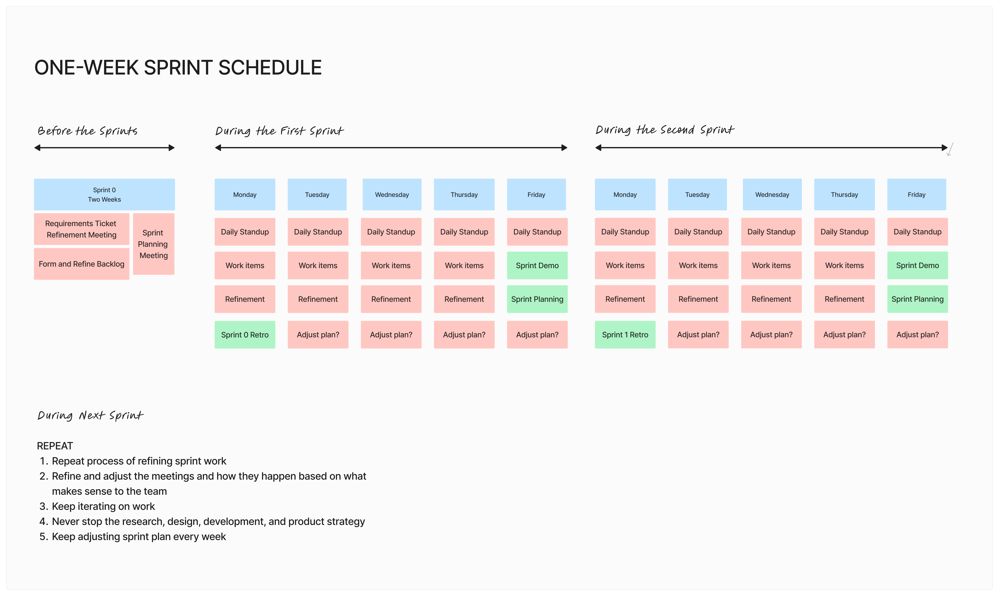
Choosing the problem statements
The first thing we did was find a problem that existed in the world to research and design for. We identified and chose a few main components to focus on that we felt were the most important areas to look into.
The problem statement
"People have a hard time recognizing scams. How might we create a system that automatically detects scams for people who have a hard time recognizing them?"
Secondary research consisted of these main questions:
- What kinds of scams do people experience?
- How do we define "scams"?
- Who are the users most vulnerable to scams?
- What are the most common scams today?
- Do people always know they are getting scammed?
Data was collected in large tables.
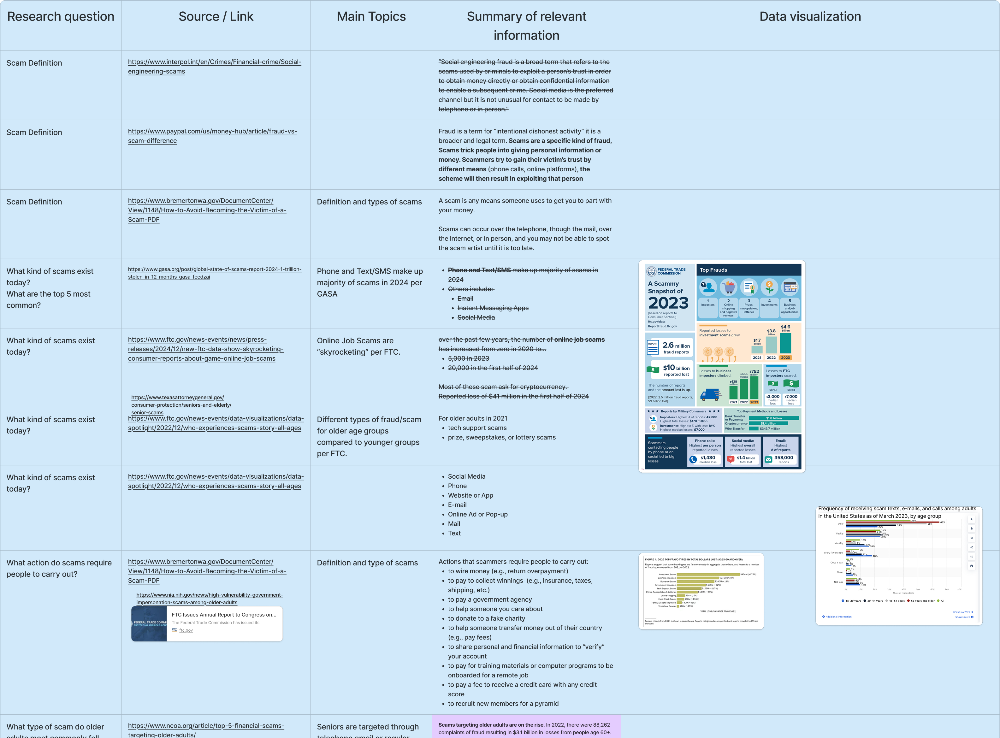
The data was synthesized.
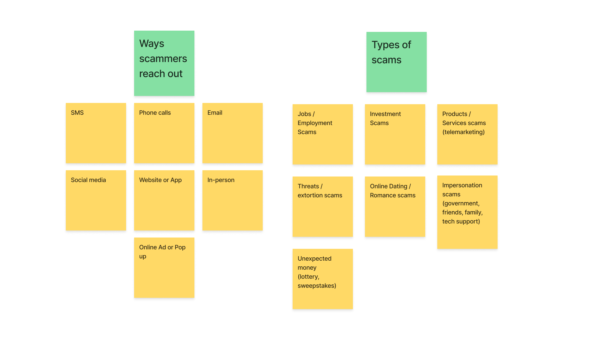
Primary research was needed to collect information directly from the user answering the most important questions.
Interview materials were made including a screener, a script, and interview questions.
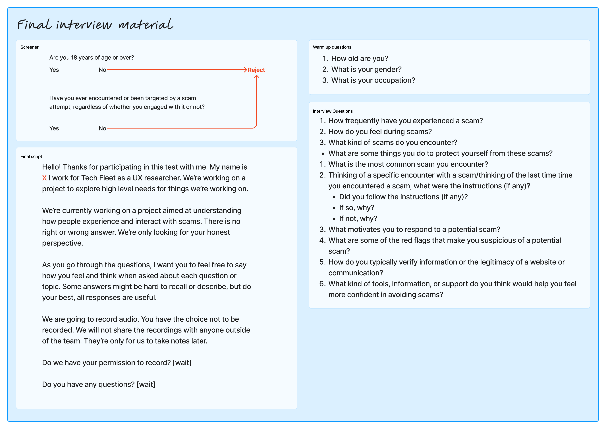
We ran interviews with 8 participants and collected data in tables.
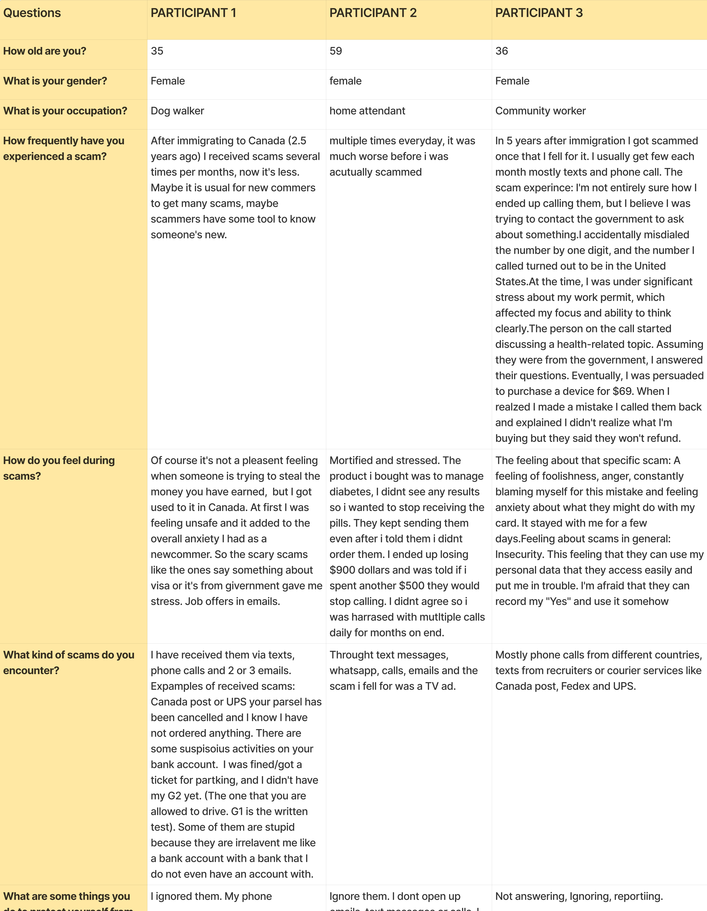
A survey was also created.
Here were the results of the survey.
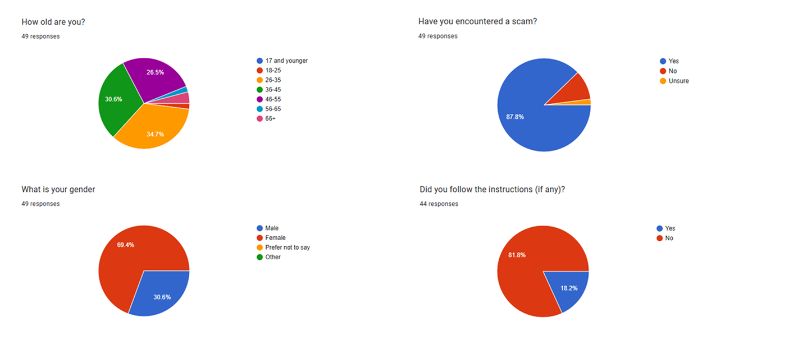
Much of the survey questions were also open-ended responses that led to various answers.
At the beginning of every week we synthesized and organized our data from what people said, and also the existing data we found. This was important because it helped us recognize patterns a[...]
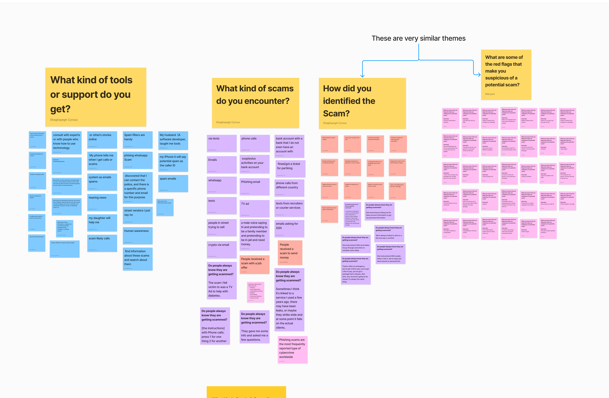
We used the scientific method to confirm or deny assumptions (hypothesis), and to build on what we discovered. If we thought something could be valid then we tested that with research to pr[...]
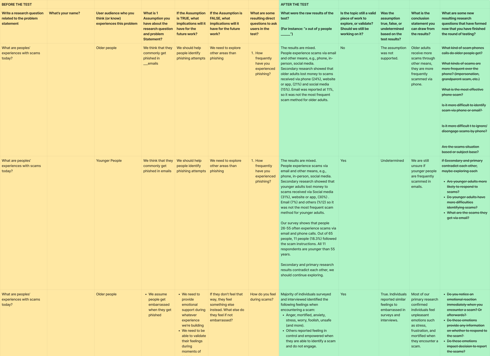
As we discovered new themes and questions, we used prioritization matrices to focus and vote on the most important subjects. This was based on the level of risk and value if looked into or [...]
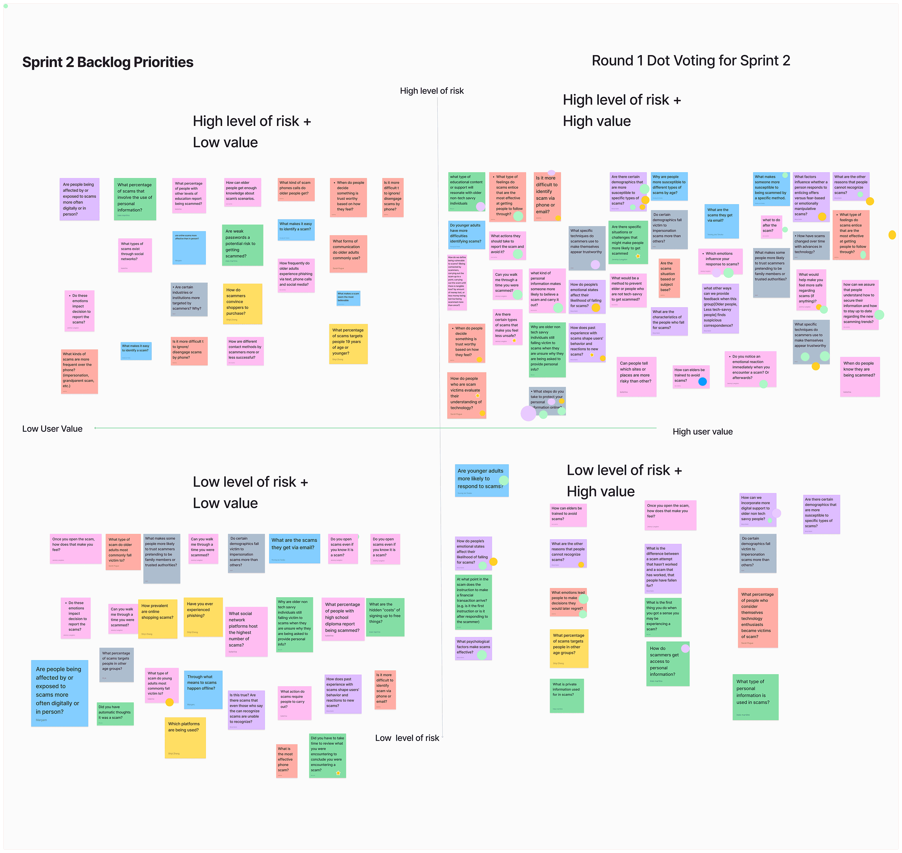
A prototype concept was brainstormed to help users deal with social media scams. We used facebook messaging. A task flow was then created to begin integrating the concept as part of the app[...]
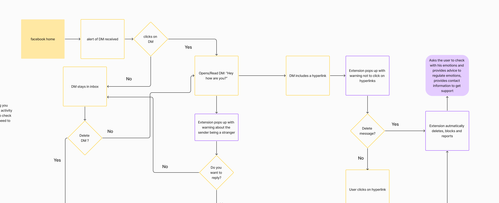
A basic prototype was created to be tested on users to see if they could understand the concept, and also to record any reactions that may be helpful in future iterations.
Based on what we saw, we found that emotional vulnerabilities played a large role in victims falling for scams, especially if it directly targeted them, seemed urgent, or believable. That feeling o[...]
Our research was only based on a small sample size, but with more time and participants, a more accurate generalization could have been formed on the most significant factors regarding vict[...]
A concept test was performed to test how users responded to the design and concept. We collected the data in a table.

We gave them scenarios, observered their experience, and recorded measurements like if they are clickling on the messages, their facial expressions, their frustration level from tapping, ve[...]
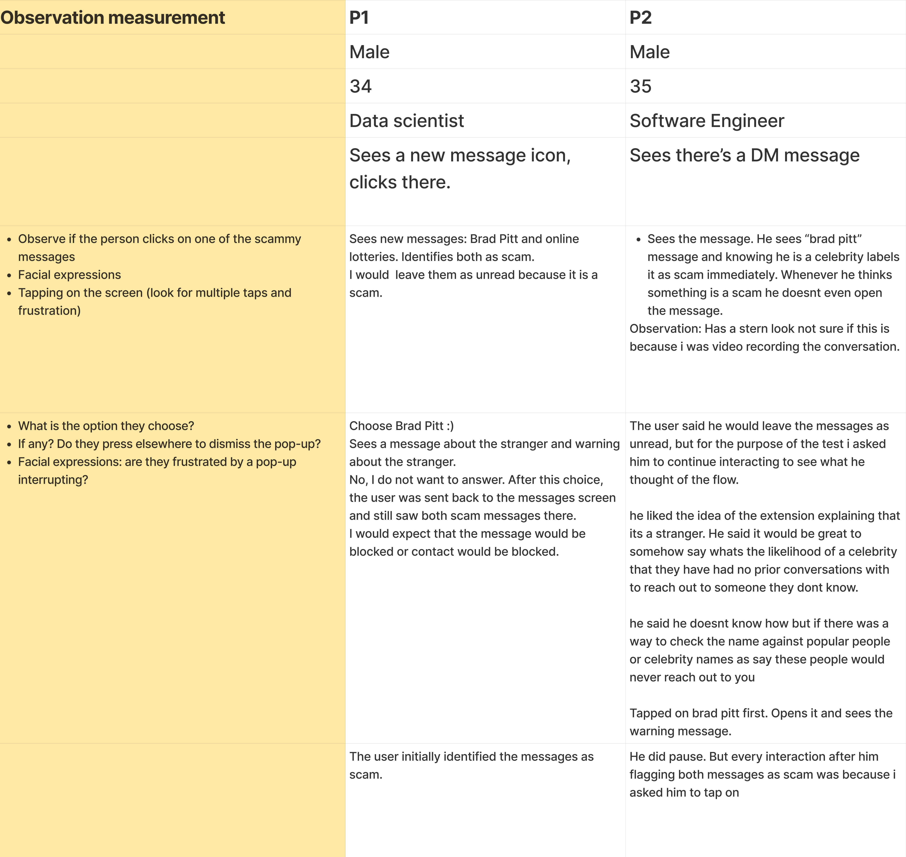
Even with such a minimal and basic protoype, users felt that our methods to deter scams were helpful.
By conducting primary and secondary research through Continuous Discovery and Lean UX, we were able to discover problems that people face today, and after speaking to them, learned what the[...]
By creating a prototype, and focusing on the people and the data, we were able to form discoveries and conclusive evidence. A solution was then created and tested with promising results. Th[...]
Conclusion
Researching for online safety and scam prevention required a large amount of research into the subject, how it affects people, and how to prevent it.
This was done by forming a research plan, creating interview questions, conducting interviews, conducting secondary research on existing data, forming conclusions, and making and testing ne[...]
In the United States in 2024, consumers filed about 2.6 million fraud reports with the Federal Trade Commission's Consumer Sentinel Network. $12.5 billion total losses were reported, and o[...]